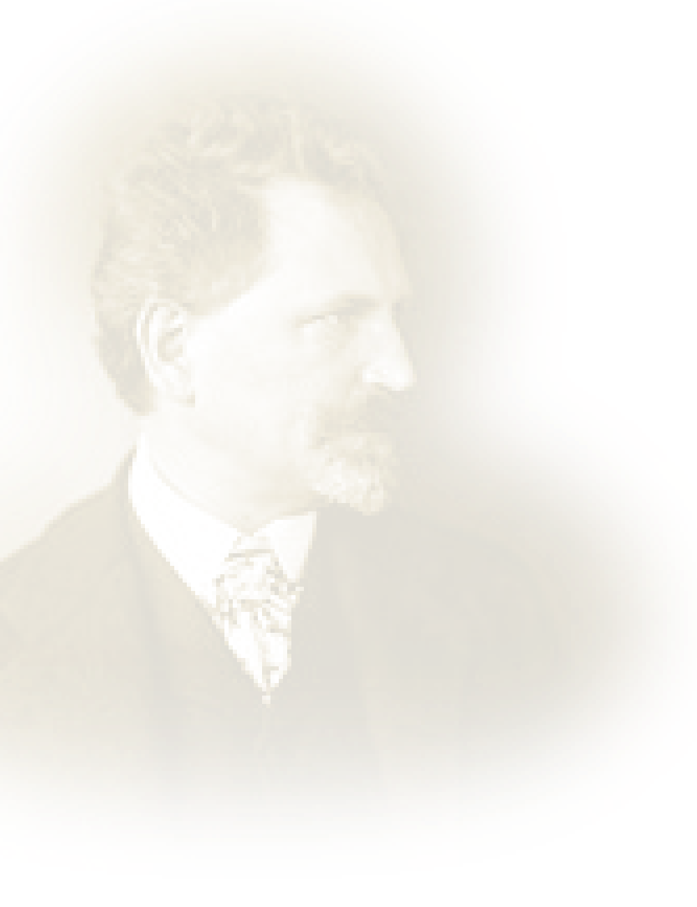
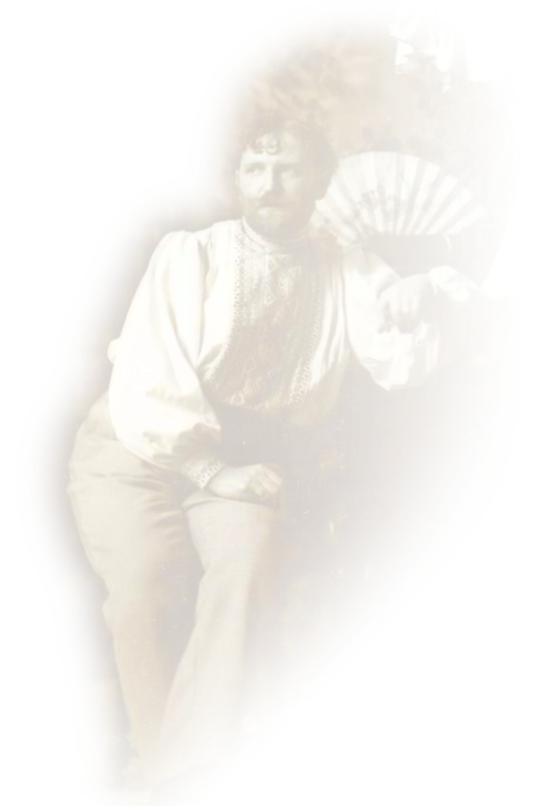

Alphonse
Maria
Mucha
1860-1939

1860년
1860년 7월 24일 체코 모라비아의 작은 마을 이반지체에서 알폰스 무하 태어나다.
1876년
프라하 예술 아카데미에 입학하고자 하였지만, 거절당했다.
이후 무하는 우연히 신문에서 카우츠키 브리오시 부르크 하르트 무대 공방에서 장식 화가를 구한다는 광고를
보았고 오스트리아 빈으로 가서 무대 공방에 취업하여 무대 배경그림, 극장 커튼 등을 제작하며 일을 했다.
1881년
무대 공방의 가장 큰 고객이었던 링 극장에 화재가 난다.
일손을 줄일 수 밖에 없었던 무대 공방은 가장 어리고 경험이 없던 무하를 해고한다.
1885년
쿠엔 벨라시 백작이 무하를 후원해줌으로써 무하는 독일의 뮌헨 아카데미에 가게 된다.
1887년
무하는 쿠엔 벨라시 백작의 후원으로 다시 파리 아카데미에 가게 된다.
1894년
크리스마스 즈음, 무하는 친구의 부탁으로 인쇄소에서 일을 하고 있었다.
이때 당시 가장 유명한 여배우였던 사라 베르나르의 매니저가 급하게 인쇄소를 찾는다.
그렇게 무하는 지스몽다의 포스터를 제작했다.
1895~1900년
무하는 전성기를 맞아 쉴 새 없이 작품을 만든다.
1900년 무하는 어느덧 40대의 나이가 되었다.
무하는 돈을 벌기 위해 미국으로 향했다.
1910년
미국으로 가서 돈을 벌던 무하는 1909년 대부호 찰스R.크레인으로부터 <슬라브 서사시>를 위한 재정적 지원을 약속 받았다.
무하는 조국과 민족을 위해 약 20년 간 20개의 <슬라브 서사시> 에피소드를 만들었다.
1939년
1930년 나치가 등장한다.
1939년 독일군은 프라하로 행진한다. 슬라브 민족의 이야기를 담던 무하는 나치의 눈밖에 난다.
무하는 프리메이슨 활동에 대한 명목으로 체포되어 며칠 동안이나 심문을 받다 석방된다.
1939년
고령의 나이인 무하는 지난해 앓았던 폐렴과 나치의 심문으로 인해 건강을 해치고 결국 1939년 7월 14일
79세의 나이로 생을 마감했다.

